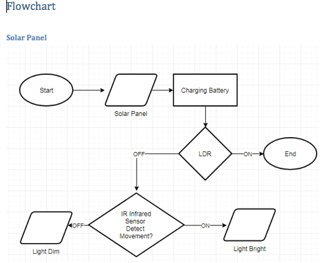
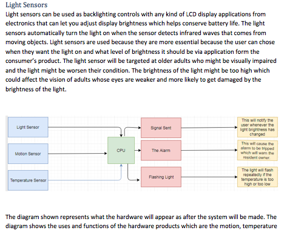

The purpose of this automated system is to demonstrate how
common domestic features can be automated using technology.
This system has the potential to be aimed at elderly or disabled
individuals who would have difficulty in manually performing
the automated tasks.Automated systems are used because it creates a safe and improved working environment. Automation reduces risk of safety and health issues and it helps eliminate the risk of repetitive strain injury. The use of automation helps companies become more competitive. The production process is used with automation which reduces human error in the work place and it makes the quality of the product is better and becomes more consistent which helps for the cost of materials to go down because of the fast speed of production and the decrease in resources needed for the produce of the items. Automated systems help eliminate the required need for staff to perform mundane and monotonous task like these. Automated machines helps increase production rates as the machines can be set to complete this repetitive task 24/7 without human input. Automated systems don’t need breaks, sick leave or vacation. Automated systems help increase the production by 140%+. Automated machines can work faster than humans and produce products more accurately with fewer problems with the product. Automated machines are able to adapt easily and have the ability to perform different jobs.

